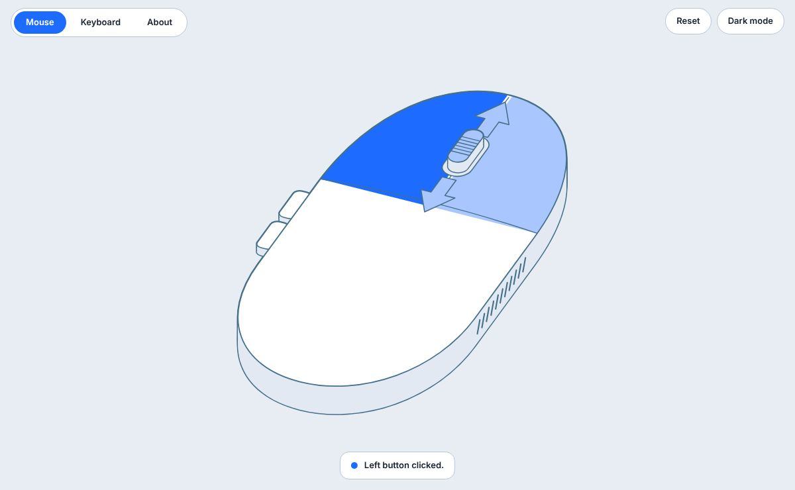
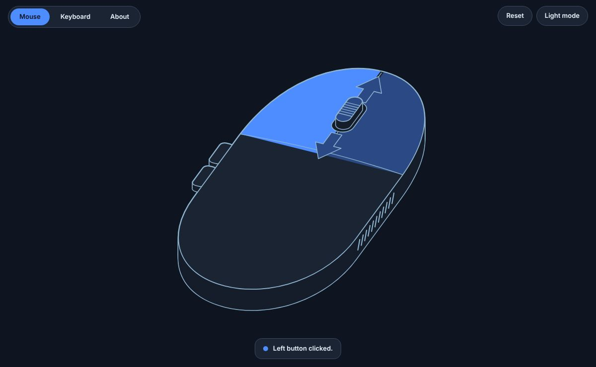
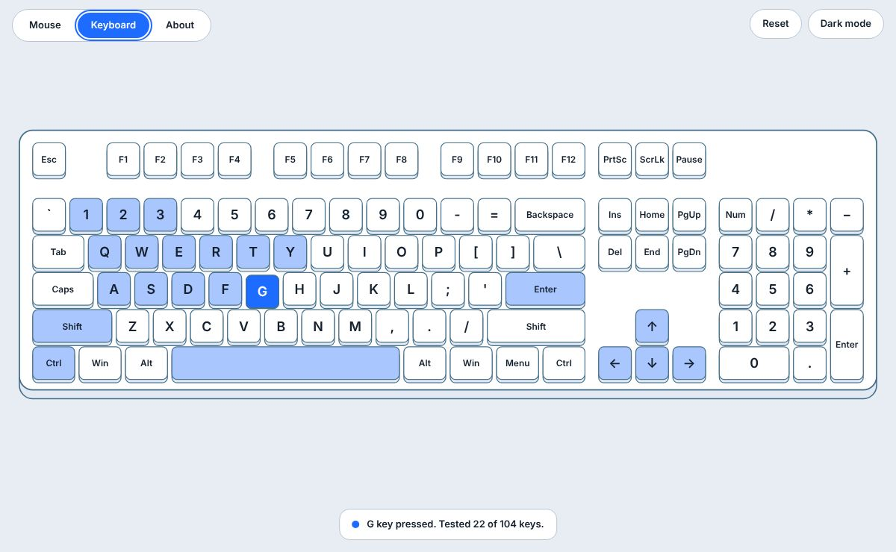
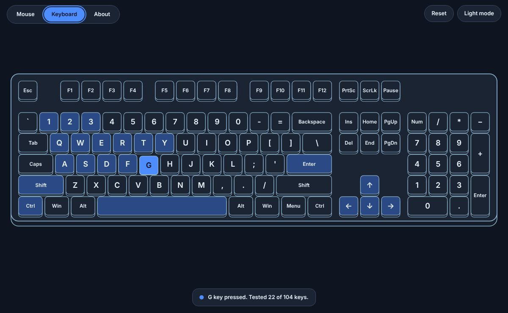
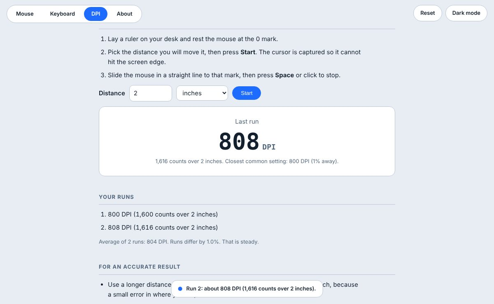
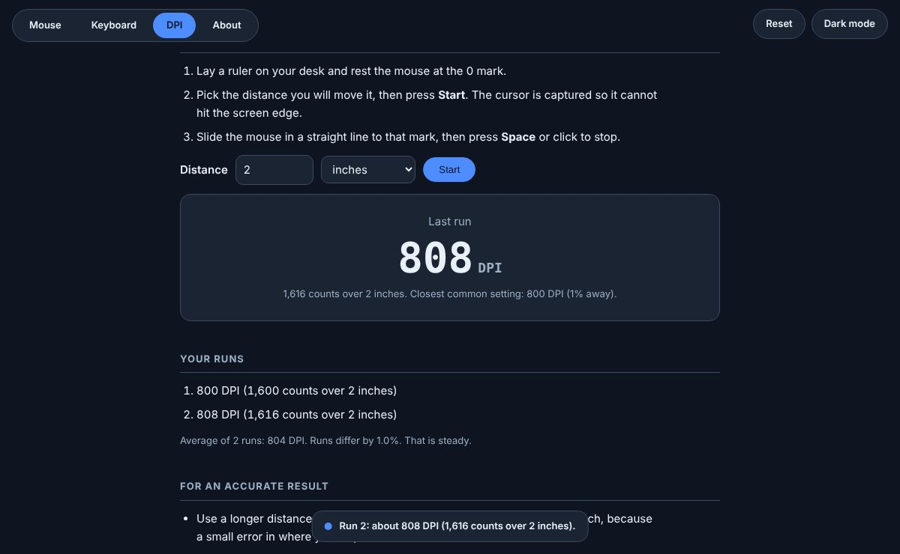
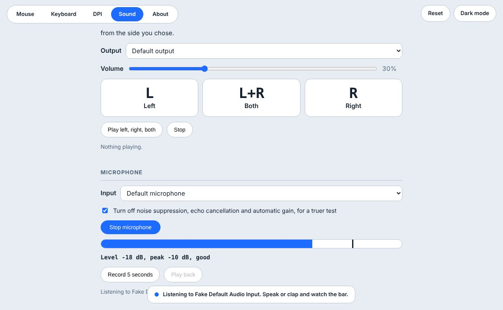
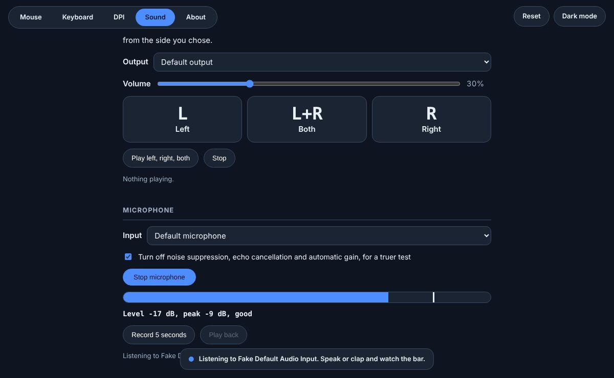

Windows
- File
- MouseKeyboardTest-Windows.zip
- Size
- 2.2 MB
- Needs
- Windows 10 or 11 with Microsoft Edge or Chrome
SHA-256 ca39ab8ac9bf93aaa219f615d55ad938e7ec03d46181e771e847b9e17ef817b7
Download for WindowsFree · Version 1.2.1 · Web, Windows, macOS, Linux
Press a button or a key and its picture lights up. The test also warns you about double presses, missed presses and a scroll wheel that jumps backwards, it can measure your mouse DPI, and it tests your speakers and microphone. No account, and nothing leaves your computer.


What it checks
Left, right, middle, and the back and forward side buttons.
Up and down arrows light up, with a tick count for each way.
The full layout, including the numpad. See how many you have tested.
Move the mouse a distance you measure with a ruler and read its DPI.
Play a tone through the left, right or both speakers, and check any microphone.
A button or key that registers twice in under 60 ms is flagged as faulty.
Keyboard tab
Each key dips and lights up while you hold it, then keeps a lighter tint. A note at the bottom reads out the last key and how many of the 104 you have covered.


DPI tab
Rest the mouse at the 0 mark of a ruler, press Start and slide it a set distance. The test counts how far the mouse reports moving and works out the DPI, then names the closest common setting.


Sound tab
Press Left, Right or Both and listen for three beeps from that side only. Then switch the microphone on, speak, and watch the level bar move.


Get it
The apps are small and open the test in your installed Edge, Chrome or another Chromium browser as a window of its own. Each file comes with its SHA-256 checksum so you can confirm the download.
SHA-256 ca39ab8ac9bf93aaa219f615d55ad938e7ec03d46181e771e847b9e17ef817b7
Download for WindowsSHA-256 c5d14f8a96228ae479e0e52b4d41c3bd560dc5f8c22d3ef7701ae10faf23426f
Download for macOSSHA-256 f56e851c03552d8b7672f2ff4f61bc64ef5a79515296b91e3183cd7b35cd9107
Download for LinuxUnzip, then double-click the exe. Windows may warn about an unknown publisher because the app is not code-signed. Choose More info, then Run anyway.
Unzip and drag the app to Applications. The first time, right-click it, choose Open, then Open again to confirm.
Unzip and run ./MouseKeyboardTest. If it will not start, run chmod +x MouseKeyboardTest first.
Shinjuu
Designer and developer of Mouse and Keyboard Test. Questions, bug reports and ideas for new tests are welcome.
Mouse and Keyboard Test is free. If it helped you and you would like to say thanks, a donation helps pay for the time to keep improving it. It is entirely optional.
0x096605352effe89ac90da09a735718096b86bf6cbc1q0972yhewhpxrew3nvm307t328njmszupcdhxwl0x0f8504fc596822af84b0e2176794a622d35af334Prefer another donation platform? Contact the developer by email, Discord or Facebook.
Check the address carefully and confirm the network with the developer before you send, because a payment sent on the wrong network cannot be recovered. Donations are voluntary gifts. They do not buy support, features or any guarantee.
Last updated 11 November 2026